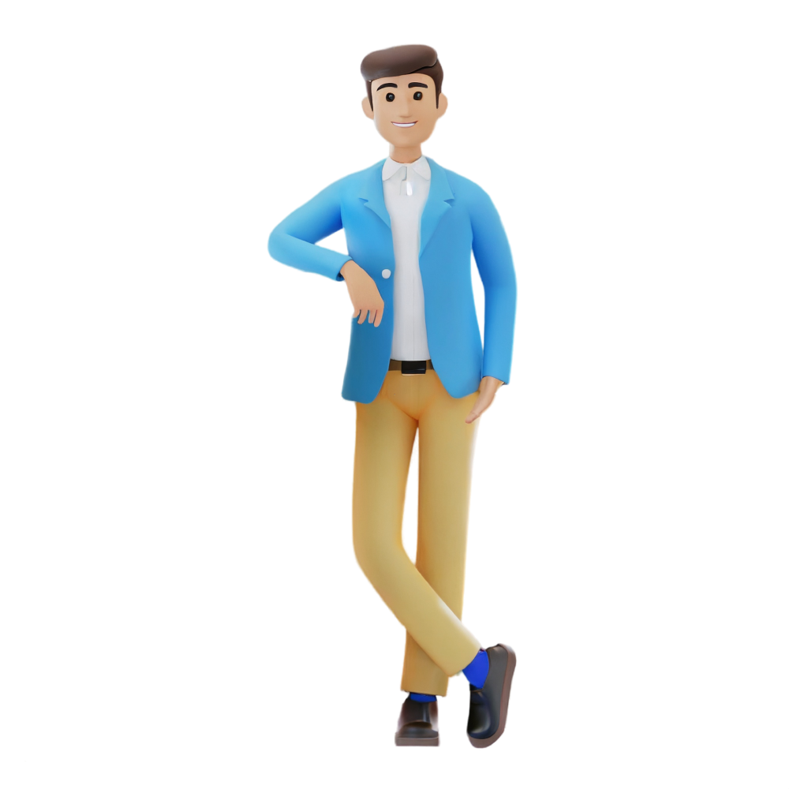

A passionate web developer, UI/UX designer, and Java expert. With a love for technology and a creative mindset, I strive to create stunning and user-friendly websites and applications that leave a lasting impact. My expertise in web development allows me to bring ideas to life, while my skills in UI/UX design ensure a seamless and enjoyable user experience. I'm always up for a coding challenge and love finding innovative solutions to complex problems.
But that's not all! When I'm not busy coding, I'm an avid gamer who enjoys exploring virtual worlds and competing with fellow gamers. It's a great way to unwind and stay connected with the gaming community.
During my college days, I had the honor of being the captain of the coders club. Leading a team of talented individuals and organizing coding competitions was an incredible experience that further fueled my passion for technology and collaboration.
If you're looking for someone who is not only skilled but also dedicated and enthusiastic about their work, I'm your guy! Let's connect and discuss how we can bring your digital projects to life. Feel free to check out my portfolio to see some of the exciting projects I've worked on!"
Hey there! I'm Nazim
A passionate web developer, UI/UX designer, and Java expert. With a love for technology and a creative mindset, I strive to create stunning and user-friendly websites and applications that leave a lasting impact. My expertise in web development allows me to bring ideas to life, while my skills in UI/UX design ensure a seamless and enjoyable user experience. I'm always up for a coding challenge and love finding innovative solutions to complex problems.
But that's not all! When I'm not busy coding, I'm an avid gamer who enjoys exploring virtual worlds and competing with fellow gamers. It's a great way to unwind and stay connected with the gaming community.
During my college days, I had the honor of being the captain of the coders club. Leading a team of talented individuals and organizing coding competitions was an incredible experience that further fueled my passion for technology and collaboration.
If you're looking for someone who is not only skilled but also dedicated and enthusiastic about their work, I'm your guy! Let's connect and discuss how we can bring your digital projects to life. Feel free to check out my portfolio to see some of the exciting projects I've worked on!"